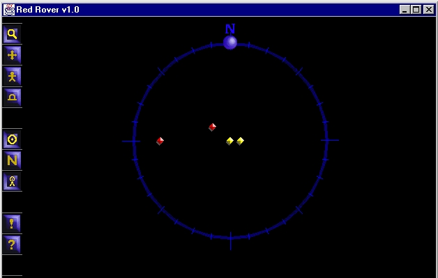
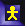
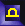
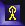
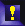
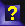

RedRover is a spatial game in which individuals equipped with small mobile devices form teams and interact in a physical environment augmented with virtual elements. This forces the participants to rely to a great extent on information provided by the mobile units and not solely on what is visible to the naked eye.
The key component of RedRover is that players share their physical location in space. Each player has a kind of radar image on their screen which is constantly updated with the locations of (connected) players as they move.
examples/RedRover
directory. Start the game with:
java Game <config_file>
from the game distribution directory. Appendix A contains information about configuration files.
Only one instance of Red Rover can run in each LimeServer, although
multiple instances can be run on the same host if you specify diffeerent
ports as in java Game rr.gp -port 1900. Be sure that one of the
players is designated (in its configuration file) to be the leader.
When the game begins, the user interface appears on your screen similar to the following, but only showing the icon for your player in the center of the screen.
|  |
The screen above shows a game involving four players on four computers--two on the red team, and two on the yellow team. Assuming that one of the red players is the leader, the other players joined this player by pressing their engagement button (see below). This brings us to the nine buttons on the left side of the interface. Each of these buttons has a unique purpose during game play as described below. The first four buttons represent the current state of the GUI and thus only one of these four can be selected at any given time.
Zoom: After selecting this button you will be able to zoom in and out by clicking anywhere in the window and moving the mouse up and down.
Map Move: After selecting this button you can explore other regions of the map without moving your player by clicking and dragging on the screen.
 Player Move: After selecting this button you can move your player by clicking and dragging on the map. Your player "walks" in the direction that you drag the mouse.
 Player Info: After selecting this button, clicking on any player's dot on the screen will bring up information about them. This information might include (but is not limited to) a picture of the player. You will be able to get more information about players on your same team.
The next three buttons work like toggle switches, each controlling a distinct aspect of the game.
Map Re-center: When this button is "down" your player is positioned in the center of the compass. However, performing a map move will cause this button to automatically change to the "up" position.
North Lock: Clicking this button will toggle your view so that the top of the screen is either (1) pointing north or (2) pointing the direction your player is facing. When the button is "down" then you are in mode (1) and when the button is "up" then you are in mode (2).
 Engage/Disengage: This is one of the most critical buttons when playing RedRover!! Clicking this button will engage/disengage you to the game. You are engaged when the button is "down" and disengaged when the button is "up".
The last two buttons deal with looking for and finding objects while playing the game.
 Found Object: This button allows a player to announce that he has found an object. This can be used in a clue-finding game or in a game in the spirit of capture the flag.
 Look for Object: This button allows a player to indicate a type of object he would like to look for (for example a flag of a particular color).
Unless you are the Lime leader, the first thing that you will need to do is engage so that you can communicate with the rest of the people in the game. To do this, click on the engage/disengage button. After engaging you will see the other players appear on your screen. You're now ready to play the game!
Game play proceeds as players use the features specified above to move about the map. One of the games you can play with Red Rover is a simple freeze tag where one team is it (see the configuration file). When a player from the it team tags a player on any other team, that player is frozen. A frozen player can be unfrozen by being tagged by a member of his own team.
When an instance of Red Rover begins, two tuple spaces are created. One is the team tuple space, and one is the game tuple space. The game tuple space is used to communicate with all other agents playing the game. The team tuple space is used to communicate only with agents on the same team. There is a Lime StationaryAgent inside the Red Rover game. It is this agent that allows the players to interact with each other. There are two ways the players communicate with each other. One method is to register weak reactions on the team and/or public tuple spaces as a way of listening for information from other players. The other method is to write tuples to the team and/or public tuple spaces to share information with other players.
After the tuple spaces are set up, the agent registers one weak reaction in the team tuple space and one weak reaction in the public tuple space. These weak reactions will fire whenever a new tuple arrives that should be processed. The reactions then fire an event which is processed by the game.
After the agent registers the weak reactions, it will enter an infinite loop for writing tuples. For each iteration through the loop, the Interactor will wait to dequeue an item from its synchronized queue (the Interactor uses a queue from the Lime API -- gp.util.Queue). Once an item is available from the queue, it will be processed by wrapping it in a tuple and then writing the tuple out to the appropriate tuple space. The tuples that are written out to the tuple space contain information about the Interactor that it would like to share either with everyone or with other agent's on his team. For example, a player might place a location tuple in the tuple space. Then, as he moves, he removes his old location tuple from the tuple space (via an inp operation) and then writes his new location (via an out operation). Other players who would like to know the current location of that player would register a reaction to react to new location tuples of other players. When these reactions are fired, the players' screens are updated with the new information.
Note: A line starting with a pound sign (#) is a comment.
##################################################################### # Red Rover properties file # # The name of the player. # any string value is appropriate. name = Player One # The team name and also becomes the name of the team # tuple space. The team name should be one of the following # colors: blue, green, orange, purple, red or yellow team = Red # Specifies whether or not your team is it (in the freeze tag game). # Only one team should be it at any given time. IT=true # Whether this host should be declared as the leader (a bootstrapping # mechanism in Lime. leader = false # Optional...used to name the public tuple space. If you # use this then make sure EVERYONE in the game is using the # same value. The default value is "public". publicTSName = public # Optional...Time between network updates of movement events, # in milliseconds. Default is 1000. updatetime=1000 # Optional...Distance another player needs to be within in # order to tag me. Default is 10.0 tagdistance=10.0 # The starting position in space for the player. # default is random # startX = 50 # startY = 20 # The image to appear when a player's icon is clicked on. # Can be .gif or .jpg. Default is none. # picture = gp1.jpg